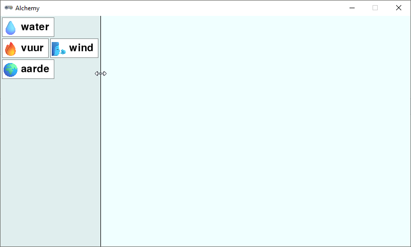

4.11. Formaat inventory wijzigen#
De breedte van de inventory hebben met inventory_width = 300 ingesteld op 300 pixels. We kunnen de speler de mogelijkheid geven om de breedte van de inventory te wijzigen door de muiscursor op de rand tussen de inventory en de workbench te plaatsen en vervolgens te slepen. Hiervoor maken we eerst twee nieuwe variabelen aan:
8# WINDOW SETTINGS
9
10WIDTH = 800
11HEIGHT = 450
12TITLE = 'Alchemy'
13
14inventory_width = 300
15inventory_min_width = 300
16inventory_rect = Rect((0, 0), (inventory_width, HEIGHT))
17workbench_rect = Rect((inventory_width, 0), (WIDTH-inventory_width, HEIGHT))
18PADDING = 3
19
20# CARD SETTINGS
21
22ICONSIZE = 32
23LEFTMARGIN = 0
24RIGHTMARGIN = 10
25TOPMARGIN = 3
26BOTTOMMARGIN = 3
27HSPACE = 5
28FONTSIZE = 30
29card_font = pygame.font.SysFont(None, FONTSIZE)
30CARD_HEIGHT = TOPMARGIN + max(ICONSIZE, FONTSIZE) + BOTTOMMARGIN
31
32# DICTIONARIES AND LISTS
33
34elements = {}
35recipes = {}
36workbench = []
37inventory = []
38
39# VARIABLES
40
41resizing = False
42dragging = False
43dragged = {}
44other = -1
De inventory_min_width variabele geeft de minimaal benodigde breedte van de inventory aan. We zetten deze in eerste instantie even op 300 pixels, maar gaan de juiste waarde straks berekenen in de calc_card_rects() functie. De boolean variabele resizing geeft aan of de speler het formaat van de inventory aan het aanpassen is. We zetten deze standaard op False.
In de calc_card_rects() functie berekenen we de juiste waarde van inventory_min_width door de breedte van de grootste card in de inventory te nemen en daar 2 keer de PADDING waarde bij op te tellen.
8def calc_card_rects():
9 global inventory_min_width
10 max_card_width = 0
11 for key, value in elements.items():
12 lbl_width, lbl_height = card_font.size(value['label'])
13 rect_width = LEFTMARGIN + ICONSIZE + HSPACE + lbl_width + RIGHTMARGIN
14 rect_height = CARD_HEIGHT
15 r = Rect((0, 0), (rect_width, rect_height))
16 if r.width > (inventory_width - 2 * PADDING):
17 raise Exception(f'Width of element \"{key}\" ({r.width} px) too large for side bar ({inventory_width - 2 * PADDING} px).')
18 elements[key]['rect'] = r
19 max_card_width = max(max_card_width, r.width)
20 inventory_min_width = max_card_width + 2 * PADDING
In regel 10 maken we een lokale variabele max_card_width aan die we gaan gebruiken om de breedte van de grootste card in de inventory te bepalen. In de for loop zetten we op regel 19 de waarde van max_card_width op max(max_card_width, r.width), oftewel de grootste waarde van max_card_width en r.width. Dat betekent: als max_card_width groter is dan de breedte van de huidige card, dan blijft de waarde van max_card_width gelijk. Is de breedte van de huidige card echter groter, dan wordt max_card_width aangepast naar die waarde.
In regels 16 en 17 is een extra check toegevoegd om ervoor te zorgen dat de breedte van de element cards niet te groot is voor de inventory.
Nu moeten we nog de drie mouse event handlers aanpassen om het resizen van de inventory mogelijk te maken. Maar voordat we dat doen, maken we een eenvoudige functie om te checken of de muiscursor op de rand van de inventory staat:
107def mouse_on_resize(pos):
108 return abs(pos[0] - inventory_width) <= 2
Als de absolute waarde van het verschil tussen de x-coördinaat van de muiscursor en de breedte van de inventory kleiner of gelijk is aan 2, dan retourneert de functie mouse_on_resize() True en anders False. Er is dus een marge van 2 pixels aan beide zijden van de rand van de inventory.
Absolute waarde
De absolute waarde van een getal is de waarde zonder teken. Dus de absolute waarde van -5 is 5 en de absolute waarde van 5 is ook 5. In Python kun je de absolute waarde van een getal berekenen met de abs() functie.
In regel 108 gebruiken we deze functie omdat de muis zowel links als rechts van de rand van de inventory kan staan. Als de muis links van de rand staat, is het verschil pos[0] - inventory_width negatief en als de muis rechts van de rand staat, is het verschil positief. Door de absolute waarde te nemen, kunnen we beide gevallen op dezelfde manier behandelen.
In de on_mouse_down() functie moeten we nu checken of de muiscursor op de rand van de inventory staat. Als dat het geval is, zetten we de resizing variabele op True en verlaten meteen de functie:
110def on_mouse_down(pos, button):
111 global dragged, dragging, resizing
112 if mouse_on_resize(pos):
113 resizing = True
114 return
115 if pos[0] < inventory_width:
116 # Clicked in inventory
117 ...
In on_mouse_move() breiden we het if statement als volgt uit:
143def on_mouse_move(pos):
144 global other, inventory_width
145 if dragging:
146 dragged['rect'].x = pos[0] - dragged['click_pos'][0]
147 dragged['rect'].y = pos[1] - dragged['click_pos'][1]
148 for index, card in enumerate(workbench):
149 if dragged['rect'].colliderect(card['rect']):
150 other = index
151 return
152 other = -1
153 elif resizing:
154 if pos[0] > inventory_min_width:
155 inventory_width = pos[0]
156 invalidate_window()
157 else:
158 if mouse_on_resize(pos):
159 pygame.mouse.set_cursor(pygame.SYSTEM_CURSOR_SIZEWE)
160 else:
161 pygame.mouse.set_cursor()
Als de speler aan het resizen is, controleren we of de muiscursor zich rechts van de minimale breedte van de inventory bevindt. Als dat zo is, passen we de breedte van de inventory aan naar de x-coördinaat van de muiscursor en roepen we invalidate_window() aan. Deze functie, die we nog moeten maken, zorgt ervoor dat het venster opnieuw wordt getekend.
Als de speler geen element aan het slepen is en ook niet bezig is met resizen, dan controleren we of de muiscursor op de rand van de inventory staat. Als dat zo is, veranderen we de vorm van de muiscursor om de speler te laten zien dat hij de breedte van de inventory kan aanpassen.
Aan de on_mouse_up() functie voegen we de volgende code toe:
163def on_mouse_up():
164 global dragging, other, resizing
165 if resizing:
166 resizing = False
167 for card in workbench.copy():
168 if not workbench_rect.contains(card['rect']):
169 workbench.remove(card)
170 return
171 if dragging:
172 dragging = False
173 ...
Als de speler bezig was met resizen en de muisknop wordt losgelaten, zetten we de resizing variabele weer op False. We verwijderen ook alle cards uit de workbench die niet meer in het werkgebied passen. Met return zorgen we ervoor dat de rest van de functie niet wordt uitgevoerd.
Zoals gezegd, moeten we nog de invalidate_window() functie maken. Deze functie zorgt ervoor dat de breedte van de inventory en de workbench worden aangepast aan de nieuwe breedte van het venster:
105def invalidate_window():
106 inventory_rect.width = inventory_width
107 workbench_rect.left = inventory_width
108 workbench_rect.width = WIDTH - inventory_rect.width
Run het spel. Als het goed is, kun je nu de breedte van de inventory veranderen.
